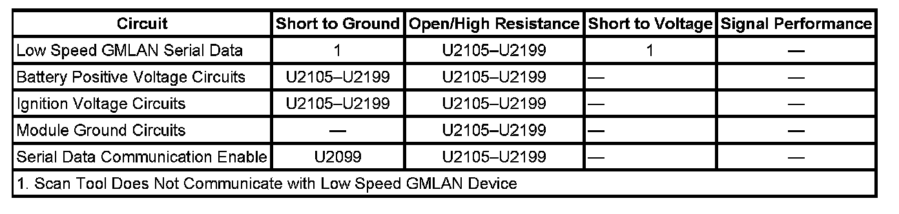

U2142
DTC U2105-U2199
DTC DESCRIPTOR
DTC U2142 00
Lost Communication With Yaw Rate Sensor (YRS)
DIAGNOSTIC FAULT INFORMATION

Perform the Diagnostic System Check - Vehicle prior to using this diagnostic procedure Initial Inspection and Diagnostic Overview.
CIRCUIT/SYSTEM DESCRIPTION
Modules connected to the high and low speed GMLAN serial data circuits monitor for serial data communications during normal vehicle operation. Operating information and commands are exchanged among the modules. The modules have prerecorded information about what messages are needed to be exchanged on the serial data circuits, for each virtual network. The messages are supervised and also, some periodic messages are used by the receiver module as an availability indication of the transmitter module. Each message contains the identification number of the transmitter module.
The body control module (BCM) activates the serial data communication enable and the accessory wakeup serial data circuits by applying voltage when the ignition key is in ACC, ON or START. The serial data communication enable circuit wakes up the electronic brake control module (EBCM) for bus communication and the accessory wakeup serial data circuit wakes up the engine control module (ECM), transmission control module (TCM), and the suspension control module.
CONDITIONS FOR RUNNING THE DTC
- The system voltage is between 9-16 volts.
- The vehicle power mode master requires serial data communication to occur.
CONDITIONS FOR SETTING THE DTC
A supervised periodic message that includes the transmitter module availability has not been received.
ACTION TAKEN WHEN THE DTC SETS
The module(s) is never signaled, therefore the specific subsystem(s) will not function.
CONDITIONS FOR CLEARING THE DTC
- A current DTC clears when the malfunction is no longer present.
- A history DTC clears when the module ignition cycle counter reaches the reset threshold of 50, without a repeat of the malfunction.
DIAGNOSTIC AIDS
- Use the DTC Descriptor list above to determine the module which is not communicating.
- If there are multiple non-communicating modules choose the one closest to the data link connector (DLC).
- Use Data Link References to determine if the module uses high or low speed GMLAN serial data communications
- Some modules may not have internal protection for specific voltage outputs and may open a battery positive voltage or ignition voltage source fuse. If a voltage input fuse is open and no short is found in that circuit, ensure that no module output voltage circuit is shorted to ground before replacing the module.
- This diagnostic can be used for any module that should communicate with high or low speed GMLAN serial data providing the vehicle is equipped with the option that uses that module.
CIRCUIT/SYSTEM TESTING
1. Using the DTC Descriptor and Diagnostic Aids above, determine the module that is not communicating that should be tested.
2. Ignition OFF, disconnect the harness connector of the module that is not communicating.
3. IMPORTANT: Only the high speed GMLAN modules have a the serial data communication enable circuit OR the accessory wakeup serial data circuit. Refer to the module schematics to identify which modules have these circuits. If the module that is not communicating does not have one of these circuits, proceed to step 4.
Ignition ON, verify that a test lamp illuminates between the serial data communication enable circuit OR the accessory wakeup serial data circuit and ground.
- If the test lamp does not illuminate, repair the circuit for an open/high resistance. If the circuits test normal, replace the BCM.
4. Ignition ON, verify that a test lamp illuminates between all battery positive voltage circuits and ground.
- If the test lamp does not illuminate, repair the circuit for a short to ground or an open/high resistance. If the circuit fuse is open, also test the positive voltage outputs of the module for a short to ground. If the circuits test normal, replace the faulty module.
5. Verify that a test lamp illuminates between all ignition voltage circuits and ground.
- If the test lamp does not illuminate, repair the circuit for a short to ground or an open/high resistance. If the circuit fuse is open, also test the positive voltage outputs of the module for a short to ground. If the circuits test normal, replace the faulty module.
6. Test for less than 1 ohm of resistance between the module ground circuits and ground.
- If greater than 1 ohm, repair the ground circuit for an open.
7. Use Data Link References to determine if the non-communicating module should use low speed GMLAN serial data.
- If the module is GMLAN high speed only, replace the module.
8. Test for less than 1 ohm of resistance in the low speed GMLAN serial data circuit between the non-communicating module and the module that displays the DTC.
- If greater than 1 ohm of resistance, test the low speed GMLAN serial data circuit for open/high resistance.
9. If all circuits test normal, replace the module that is not communicating.
REPAIR INSTRUCTIONS
Perform the Diagnostic Repair Verification after completing the diagnostic procedure.
- Control Module References for module replacement, setup, and programming
- GMLAN Wiring Repairs Verification Tests Programming and Relearning